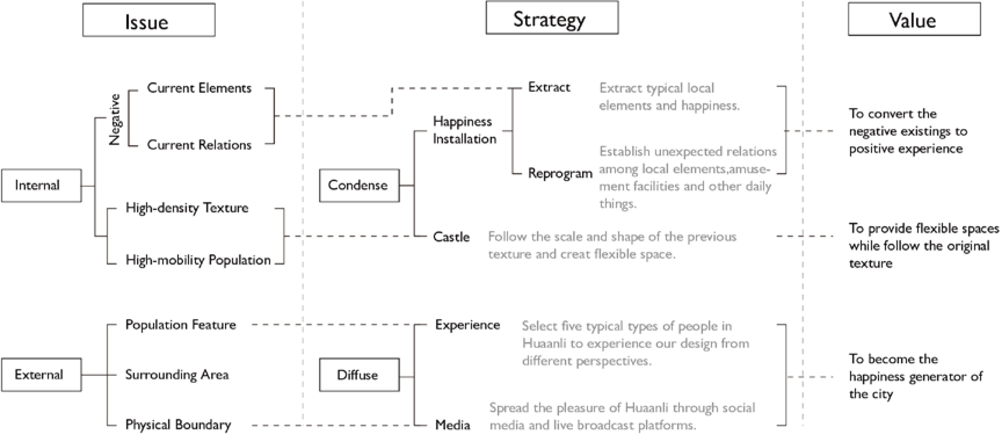

Keywords: community activation, unexpected relation
[Group Work] with Shiyan Chen, Songzi Zhou
[Tutor] Mei Jiang
[Location] Huaanli Community, Wuhan, China
[Time] April, 2019
+Description
Besieged by three railways, Huaanli is like a lonely island in Wuhan, and its only entrances are the culverts on the boudary. In recent years, almost half of people left the community due to the removal of the old garment factroy, which led to the decline of Huaanli. Nonetheless, people are still curious about this blocked and mysterious place.
We have carefully researched the people, activities and site elements in Huaanli, which appeared negative but reflected their peculiar rationality in such environment. Maybe the congestion, besiegement and disorder shoud be considered as its charm instead of illness. To deal with the complex situation, we try to improve the community through two main strategies: Condense and Diffuse. Finally, a WEBCASTle is built to break the tangible border by broadcasting the local lifestyle in a dramatic way through the internet, and it becomes a brand new happiness generator of the whole city.
+Site Plan
Our design is located at Huaanli, a village in the city Wuhan. With the expansion of city and construction of infrastucture, this community evolved from a open rural area to a closed living area for migrant workers. However, Huaanli is facing decline due to the industrial transformation. The role Huaanli plays in the city needs to be transformed as well.
+Site Layers
Due to the existence of physical boundary, including surrounding railways and concrete walls, Huaanli becomes an isolated island in the city, leading to some social problems and special phenomena incubated in this nest.
+Situation
Huaanli community is isolated by the railways and walls. In the community, high-density houses result in congested spaces, contributing to various interactions and unexpected relations. The poor living conditions, such as the terrible sanitation and lack of sunshine, are pushing people away from this region.
The major population of Huaanli comes from the countryside around the city to look for jobs in big city temporarily, leading to the high mobility of population in the community. With the removal of garment factories in this region, the community faces the population loss and decline nowadays.
Due to the lack of governance and low population quality, nagative actions such as crimes and bad manners occur frequently in Huaanli. Besides, Mahjong, the main recreational activity, attracts a lot of unemployed people in the community. Also, some unexpected relations between people and environment are created by the local lifestyle.

First, we invent 10 "Happiness Installations" by reprogramming the relations among different elements. Second, we build a new flexible castle according to the origin density and texture. By condensing them as a whole, a dramatic castle starts to generate happiness for the community.
1.1 Extracting
To establish new unexpected relations, we must break the stereotypical relations we have observed. Therefore, we extract some typical elements in Huaanli, negative but potential, to blend with the amusement facilites and some other daily things.
1.2 Reprogramming
Then, we randomly draw two of them as the components of happiness. By reconstructing the relations between the two selected components, 10 "Happiness Installations" are invented, which unexpectedly convert the negative things into postive experience.
1.3 Castle
The WEBCASTle is composed of four different layers: traffic system, working units, happiness installations of city scale, and "Happiness installtions" of body scale. These layers are organized and overlapped according to the framework from the site texture. We believe that by condensing these happiness elements and flexible spaces together, unexpected relations and happiness will emerge.
2.1 Experience
We select five typical types of people in Huaanli to experience our design from different perspectives, including residents, mobile vendors, policemen, newly settled anchors and visitors attracted by live webcast.
2.2 Media
Facebook, twitter, youtube, Tik Tok and other webcast platforms can become the media to spread the dramatic scenes in Huaanli, and tourists attracted by the videos and photos will continue to diffuse these happiness beyond the physical boundary.
+Plan & Perspective
+Modular Customization
We imagine that the WEBCASTle is built by the local people. Those willing to work here can customize their rooms with modular panels on app, which refelcts the various characteristics of the owners. Then, the customized units will be attached to the main structure. Growing, mixing and changing, the castle keeps operating as a happiness generator of the city.